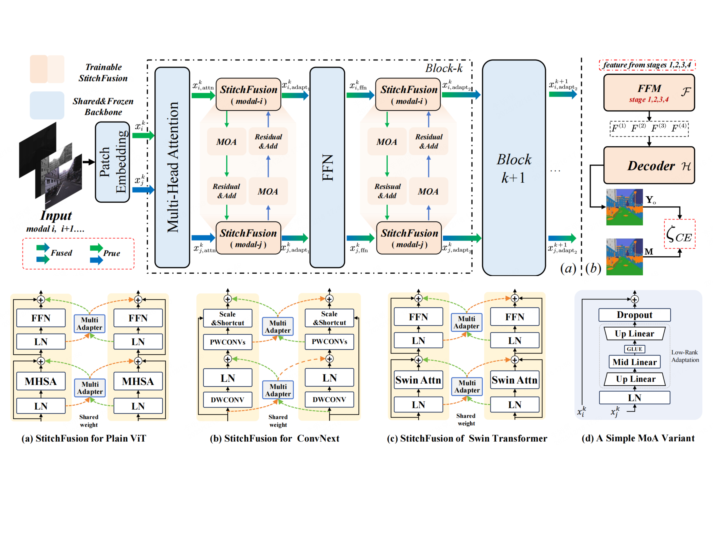
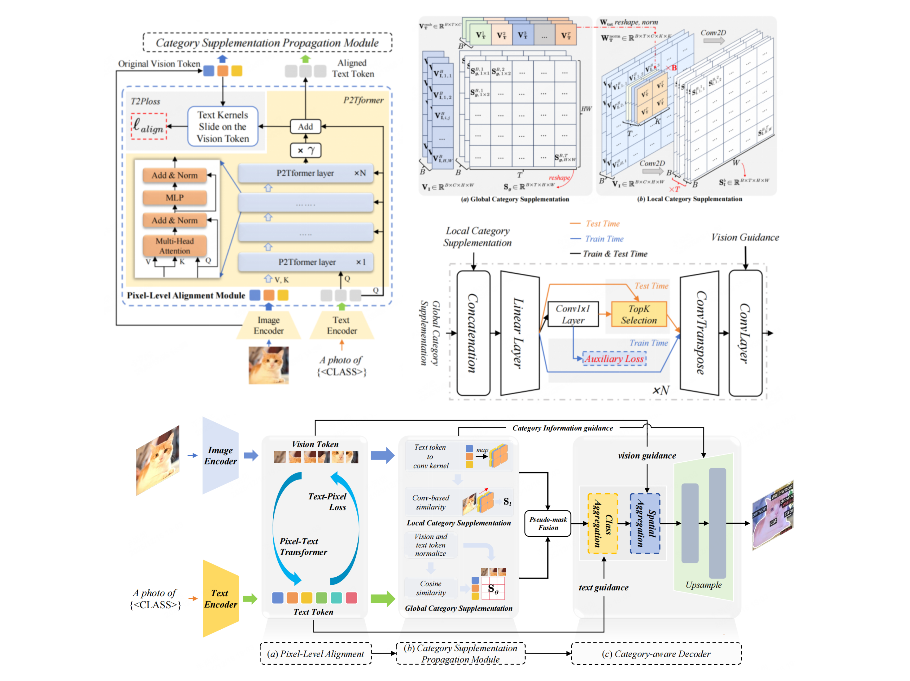
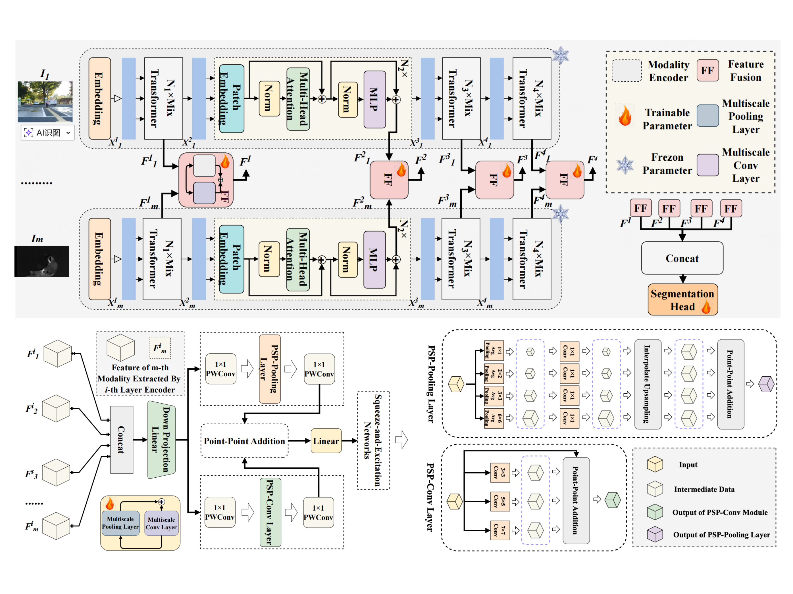

👋 About Me
I am a Ph.D. student at the University of Science and Technology of China (USTC), supervised by Prof. Xuelong Li.
My research focuses on applying multimodal large language models and vision-language models to visual tasks across diverse scenes.
🔍 Research Topics
- Multimodal LLMs: Vision-Language Models, Foundation Models.
- Computer Vision: Open-Vocabulary Segmentation, Video Understanding.
- Domain Applications: Remote Sensing Vision, Underwater Vision.
🔥 News
- 2025.11 One paper is accepted by AAAI 2026 (Oral)! 🎉
- 2025.10 Awarded National Scholarship for Graduate Students (研究生国家奖学金)! 🎖️
- 2025.04 Stitchfusion is accepted by ACM MM 2025 (Oral).
- 2024.09 Started Ph.D. journey at USTC.
📝 Selected Publications
Full list available on Google Scholar.
ACM MM 2025

Stitchfusion: Weaving any visual modalities to enhance multimodal semantic segmentation

We propose a novel framework to weave any visual modalities to enhance multimodal semantic segmentation.
AAAI 2026

Exploring Efficient Open-Vocabulary Segmentation in the Remote Sensing

We explore efficient open-vocabulary segmentation methods tailored for remote sensing imagery.
CVPR 2026

MARIS: Marine Open-Vocabulary Instance Segmentation

This work introduces MARIS for open-vocabulary instance segmentation in marine environments.
CVPR 2026/span>

Exploring the Underwater World Segmentation without Extra Training

We explore training-free segmentation methods for underwater scenes.
arXiv 2025

FGAseg: Fine-Grained Pixel-Text Alignment for Open-Vocabulary Semantic Segmentation

We devise a fine-grained pixel-text alignment method for Open-Vocabulary Segmentation.
Pattern Recognition 2025

U3M: Unbiased Multiscale Modal Fusion Model for Multimodal Semantic Segmentation

We devise a multi-scale and unbiased multimodal visual fusion method for multimodal segmentation.
🎖 Honors and Awards
- 2025, National Scholarship for Graduate Students | 研究生国家奖学金
🔗 Academic Service
Reviewer
- Journal: TGRS, PR, etc.
- Conference: CVPR, NeurIPS, ICLR, etc.